You can cite this package/vignette as:
To cite package 'ggstatsplot' in publications use:
Patil, I. (2021). Visualizations with statistical details: The
'ggstatsplot' approach. Journal of Open Source Software, 6(61), 3167,
doi:10.21105/joss.03167
A BibTeX entry for LaTeX users is
@Article{,
doi = {10.21105/joss.03167},
url = {https://doi.org/10.21105/joss.03167},
year = {2021},
publisher = {{The Open Journal}},
volume = {6},
number = {61},
pages = {3167},
author = {Indrajeet Patil},
title = {{Visualizations with statistical details: The {'ggstatsplot'} approach}},
journal = {{Journal of Open Source Software}},
}Following are a few of the common questions asked in GitHub issues and on social media platforms.
Statistical details
I just want the plot, not the statistical details. How can I turn them off?
All functions in ggstatsplot that display results from
statistical analysis in a subtitle have argument
results.subtitle. Setting it to FALSE will
return only the plot.
For parametric tests, the Bayes Factor shown in the caption is
controlled separately by the bf.message argument. Set it to
FALSE to drop the caption:
ggbetweenstats(mtcars, am, mpg, bf.message = FALSE)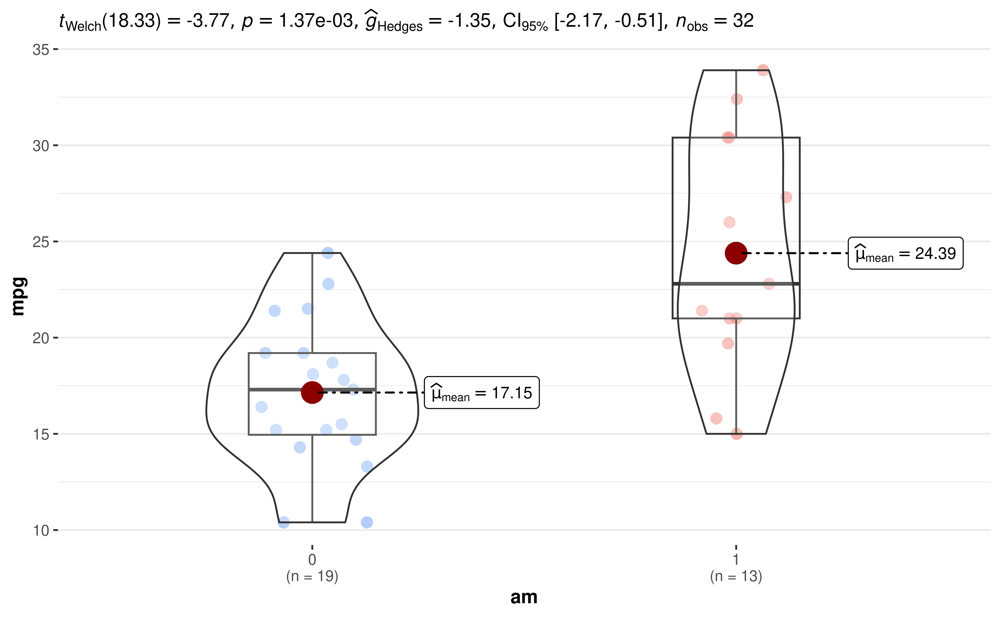
Your own subtitle text is used only when
results.subtitle = FALSE.
Why do I get only the plot but not the subtitle/caption?
In order to prevent the entire plotting function from failing when
statistical analysis fails, functions in ggstatsplot
default to first attempting to run the analysis and if they fail, then
return empty (NULL) subtitle/caption. In such cases, if you
wish to diagnose why the analysis is failing, you will have to do so
using the underlying function used to carry out statistical
analysis.
For example, the following returns only the plot but not the statistical details in a subtitle or caption, because the outcome is constant within each group.
df <- data.frame(x = c("a", "a", "b", "b"), y = c(1, 1, 2, 2))
ggbetweenstats(df, x, y)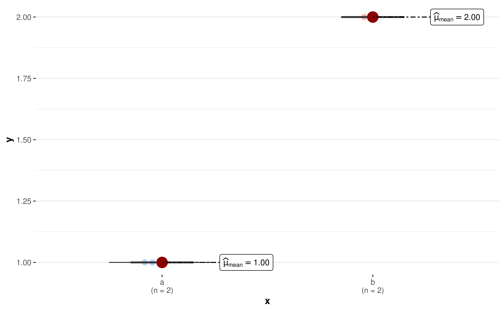
To see why the statistical analysis failed, you can look at the error from the underlying function:
library(statsExpressions)
two_sample_test(df, x, y)
#> Error in `t.test.default()`:
#> ! data are essentially constantWhat statistical test was carried out?
In case you are not sure what was the statistical test that produced the results shown in the subtitle of the plot, the best way to get that information is to either look at the documentation for the function used or check out the associated vignette.
All statistical analyses are carried out by statsExpressions, and a summary of every supported test and effect size is available in its documentation.
You can also check the method column of the data frames
returned by extract_stats() (see below).
How can I access the data frames with the statistical results?
ggstatsplot displays expressions in the subtitle and
caption, but you can get back the underlying data frames with the
extract_stats() helper function. It returns a list with the
following components (NULL when not relevant for a given
plot): subtitle_data, caption_data,
pairwise_comparisons_data, descriptive_data,
one_sample_data, tidy_data, and
glance_data.
p <- ggbetweenstats(mtcars, cyl, wt)
# data frame with results from pairwise comparisons
extract_stats(p)$pairwise_comparisons_data
#> # A tibble: 3 × 9
#> group1 group2 statistic p.value alternative distribution p.adjust.method
#> <chr> <chr> <dbl> <dbl> <chr> <chr> <chr>
#> 1 4 6 5.39 0.00831 two.sided q Holm
#> 2 4 8 9.11 0.0000124 two.sided q Holm
#> 3 6 8 5.12 0.00831 two.sided q Holm
#> test expression
#> <chr> <list>
#> 1 Games-Howell <language>
#> 2 Games-Howell <language>
#> 3 Games-Howell <language>For grouped_ plots, extract_stats() returns
one such list per group. extract_subtitle() and
extract_caption() return just the expressions.
If you only need the results and not the plot, you can call the functions from the source package statsExpressions directly (see examples).
Does {ggstatsplot} carry out assumption checks?
No, ggstatsplot does not carry out any analysis of whether assumptions are met or not. It will just carry out whatever test you ask it to carry out.
To check these assumptions, you can use a different package called {performance}.
How are missing values handled?
Rows with missing values (NA) in the variables of
interest are removed before the analysis, and the subtitle reports the
sample size that was actually used. Other columns in the data are
ignored.
- In
ggwithinstats(), specifysubject.id: any subject with a missing value in any condition is then excluded from the statistical analysis, so that only complete pairs are analyzed (the subtitle reports npairs). The subject’s non-missing observations are still shown in the plot. - In
ggcorrmat(), missing values are removed separately for each pair of variables, and the legend shows the minimum, mode, and maximum sample sizes across pairs. - In
grouped_functions, rows with missing values ingrouping.varare dropped.
# 5 of the 93 subjects in `bugs_long` have a missing value, so n_pairs = 88
ggwithinstats(bugs_long, condition, desire, subject.id = subject)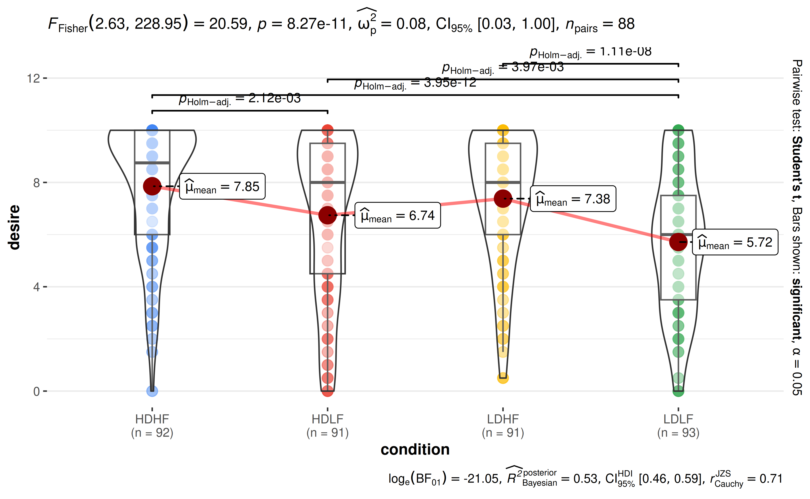
Is there a way to adjust my alpha level?
Within a single plot, some functions let you choose the cutoff used to decide what is displayed as significant:
-
pairwise.alphainggbetweenstats()andggwithinstats()(together withp.adjust.methodfor multiple comparisons correction). -
sig.levelinggcorrmat(). -
conf.level(in all functions) sets the width of the confidence intervals.
But there is no way to adjust alpha across the plots
produced by grouped_ functions, since each group is
analyzed independently. You will have to report the adjusted alpha
yourself (e.g., with 2 tests, only consider p < 0.025 as
significant).
The statistical analysis I want to carry out is not available. What can I do?
Since ggstatsplot always allows just one type of test per statistical approach, sometimes your favorite test might not be available. For example, ggstatsplot provides only Spearman’s , but not Kendall’s as a non-parametric correlation test.
In such cases, you can override the defaults and use statsExpressions to create custom expressions to display in the plot. But be forewarned that the expression building function in statsExpressions is not stable yet.
library(correlation)
library(statsExpressions)
library(ggplot2)
# data with two variables of interest
df <- dplyr::select(mtcars, wt, mpg)
# correlation results
results <- correlation(df, method = "kendall") |>
insight::standardize_names(style = "broom")
# creating expression out of these results
df_results <- statsExpressions::add_expression_col(
data = results,
no.parameters = 0L,
statistic.text = list(quote(italic("T"))),
effsize.text = list(quote(widehat(italic(tau))["Kendall"])),
n = results$n.obs[[1]]
)
# using custom expression in plot
ggscatterstats(df, wt, mpg, results.subtitle = FALSE) +
labs(subtitle = df_results$expression[[1]])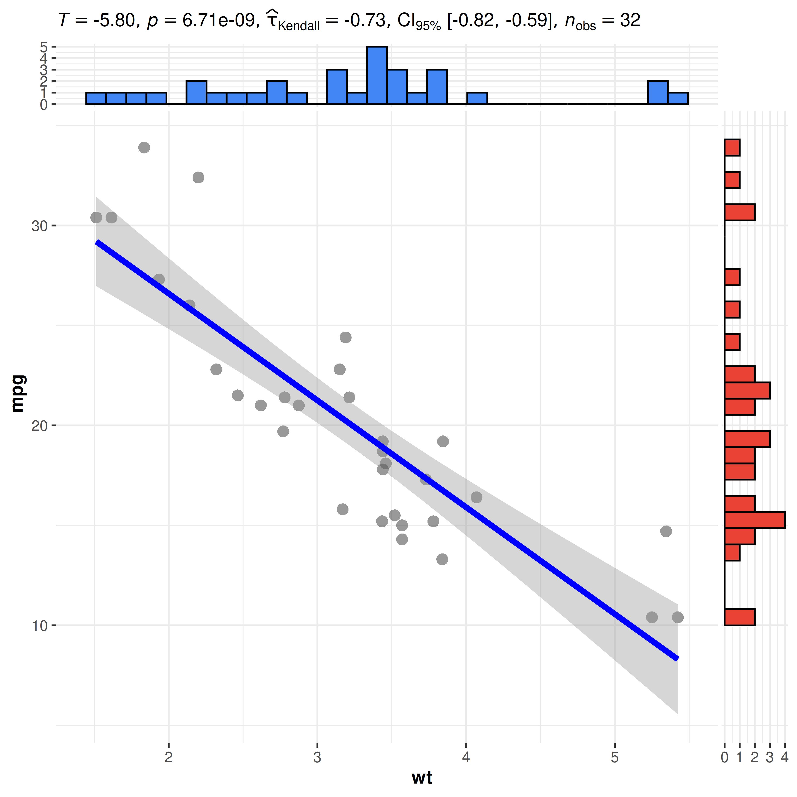
How should I cite and report the results?
You can cite the package with citation("ggstatsplot")
(see top of this article). For reporting, the expressions shown in the
plots follow a standard template (see the principles
article), and all numbers can be retrieved as data frames with extract_stats(). For interpreting
logged Bayes Factors, see this
article.
Subtitle and caption
How can I customize the details contained in the subtitle?
Sometimes you may not wish to include so many details in the subtitle. In that case, you can extract the expression and copy-paste only the part you wish to include. For example, here only statistic and p-values are included:
library(ggplot2)
library(statsExpressions)
# extracting detailed expression
data_results <- oneway_anova(iris, Species, Sepal.Length)
data_results$expression[[1]]
#> list(italic("F")["Welch"](2, 92.21) == "138.91", italic(p) ==
#> "1.51e-28", widehat(omega["p"]^2) == "0.74", CI["95%"] ~
#> "[" * "0.67", "1.00" * "]", italic("n")["obs"] == "150")
# adapting the details to your liking
ggplot(iris, aes(x = Species, y = Sepal.Length)) +
geom_boxplot() +
labs(subtitle = ggplot2::expr(paste(
italic("F"), "(", "2", ",", "147", ")=", "119.26", ", ",
italic("p"), "<", "0.001"
)))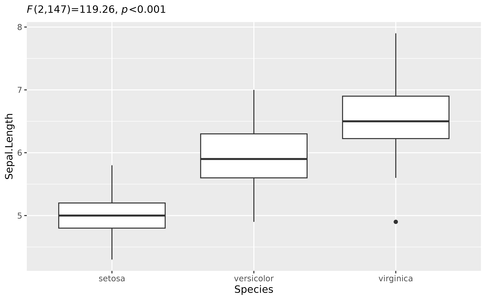
The extracted expression can also be put on any other plot with
labs(subtitle = extract_subtitle(p)).
How can I change the size or position of the subtitle?
The statistical results appear as a standard ggplot2
subtitle (and, when Bayes Factor is shown, as a caption). You can
restyle and reposition them using theme() via the
ggplot.component argument:
library(ggplot2)
ggbetweenstats(
mtcars, am, mpg,
ggplot.component = list(
theme(
plot.subtitle = element_text(size = 10, face = "bold", hjust = 0),
plot.caption = element_text(size = 8, hjust = 0)
)
)
)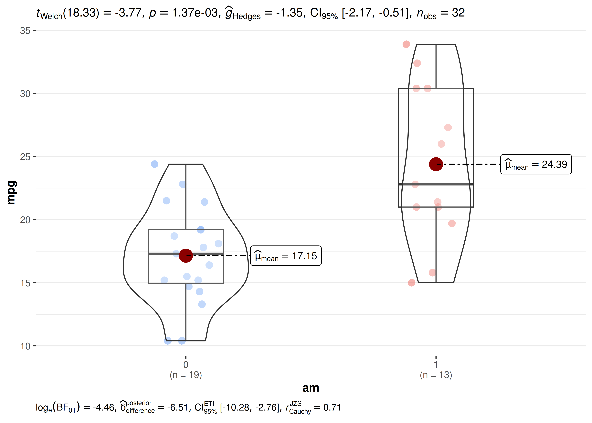
How can I turn off scientific notation in expressions?
Increase the number of digits with the digits argument.
Note that very small p-values can still be shown in scientific
notation if they would otherwise be rounded to zero.
library(WRS2)
ggwithinstats(
WineTasting,
Wine,
Taste,
subject.id = Taster,
digits = 4L
)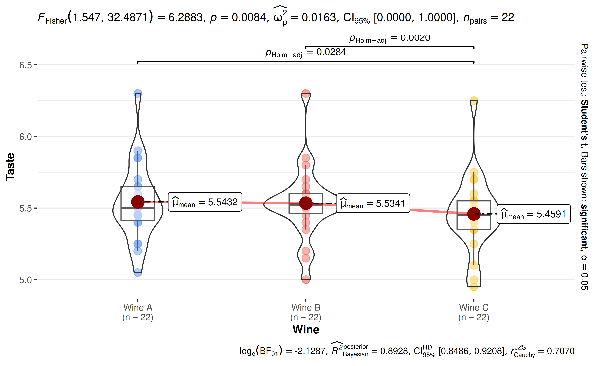
Pairwise comparisons
How can I show only some of the pairwise comparisons?
Currently, for ggbetweenstats and
ggwithinstats, you can either display all
significant comparisons, all
non-significant comparisons, or all
comparisons. But what if I am only interested in just one particular
comparison?
Here is a workaround using ggsignif:
library(ggsignif)
ggbetweenstats(mtcars, cyl, wt, pairwise.display = "none") +
geom_signif(comparisons = list(c("4", "6")), test.args = list(exact = FALSE))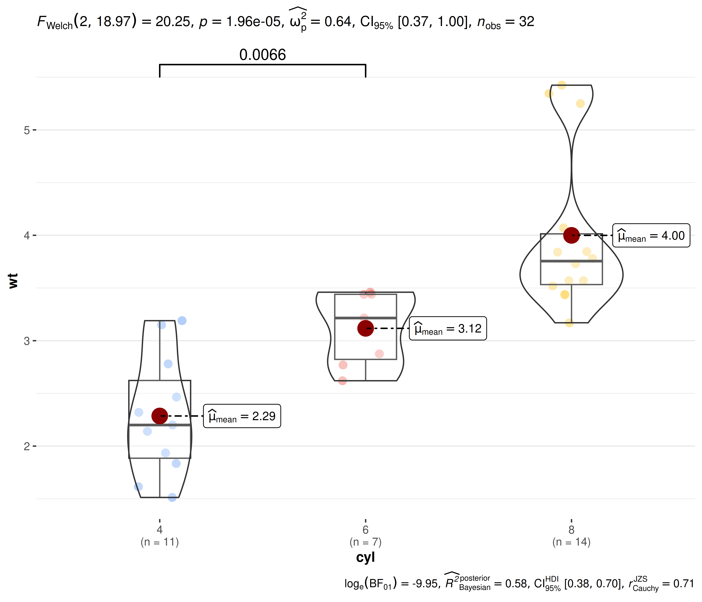
How can I change the annotation in pairwise comparisons?
ggstatsplot defaults to displaying exact p-values or logged Bayes Factor values for pairwise comparisons. But what if you wish to adopt different annotation labels, such as asterisks? You will have to customize them yourself:
library(ggplot2)
library(ggsignif)
# converting to factor
mtcars$cyl <- as.factor(mtcars$cyl)
# creating the base plot
p <- ggbetweenstats(mtcars, cyl, wt, pairwise.display = "none")
# using `statsExpressions::pairwise_comparisons()` function to create a data frame with results
df <- statsExpressions::pairwise_comparisons(mtcars, cyl, wt) |>
dplyr::mutate(groups = purrr::pmap(.l = list(group1, group2), .f = c)) |>
dplyr::arrange(group1) |>
dplyr::mutate(asterisk_label = dplyr::case_when(
p.value < 0.001 ~ "***",
p.value < 0.01 ~ "**",
p.value < 0.05 ~ "*",
.default = "ns"
))
df
#> # A tibble: 3 × 11
#> group1 group2 statistic p.value alternative distribution p.adjust.method
#> <chr> <chr> <dbl> <dbl> <chr> <chr> <chr>
#> 1 4 6 5.39 0.00831 two.sided q Holm
#> 2 4 8 9.11 0.0000124 two.sided q Holm
#> 3 6 8 5.12 0.00831 two.sided q Holm
#> test expression groups asterisk_label
#> <chr> <list> <list> <chr>
#> 1 Games-Howell <language> <chr [2]> **
#> 2 Games-Howell <language> <chr [2]> ***
#> 3 Games-Howell <language> <chr [2]> **
# adding pairwise comparisons using `{ggsignif}` package
p +
ggsignif::geom_signif(
comparisons = df$groups,
map_signif_level = TRUE,
annotations = df$asterisk_label,
y_position = c(5.5, 5.75, 6.0),
test = NULL,
na.rm = TRUE
)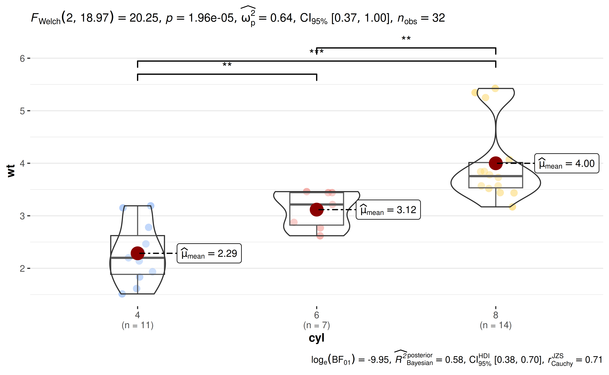
Why do pairwise comparison brackets disappear when I restrict the Y-axis?
This is a common ggplot2 footgun. There are two ways to restrict the visible y-range, and they behave very differently:
-
scale_y_continuous(limits = c(a, b))— modifies the data, setting any values outside[a, b]toNAbefore rendering. Because pairwise comparison brackets from ggsignif are positioned above the maximum observed value, they often fall outside a tight limit and are silently dropped. -
coord_cartesian(ylim = c(a, b))— zooms the viewport without touching the underlying data. The brackets are still computed from the full data range and remain fully intact.
The fix is to replace scale_y_continuous(limits = ...)
with coord_cartesian(ylim = ...):
library(ggplot2)
ggbetweenstats(mtcars, cyl, wt) +
coord_cartesian(ylim = c(1, 4))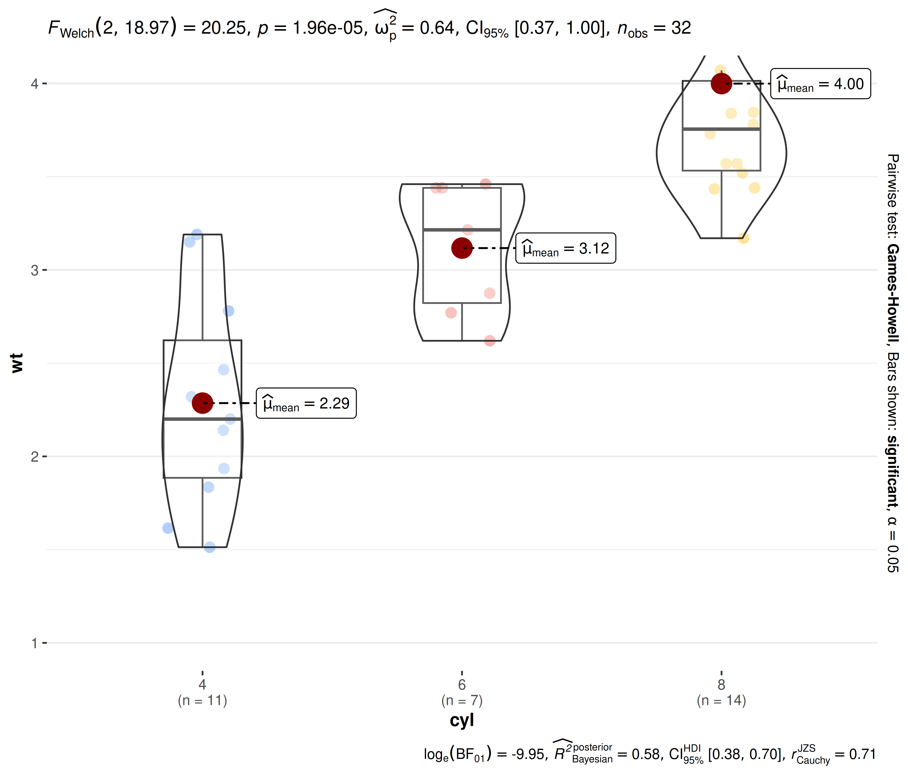
Plot appearance
How can I change the theme, color palette, or colors?
Use the ggtheme argument to supply any
ggplot2 theme (the default is
theme_ggstatsplot()), and the palette argument
to choose any discrete palette from paletteer in the
"package::palette" format. Run
View(paletteer::palettes_d_names) to see all available
palettes.
ggbetweenstats(
mtcars,
cyl,
wt,
ggtheme = ggplot2::theme_classic(),
palette = "ggsci::nrc_npg"
)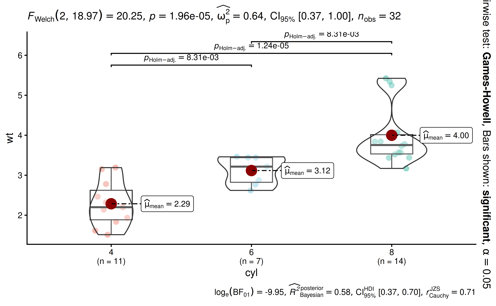
The palette must have at least as many colors as there are levels in
the grouping variable; otherwise an error is thrown.
ggscatterstats(), gghistostats(),
ggdotplotstats(), and ggcorrmat() don’t have a
palette argument; use the relevant *.args
arguments (or colors in ggcorrmat())
instead.
If none of the palettes suit you, specify the colors manually with the usual ggplot2 scales:
library(ggplot2)
ggbarstats(mtcars, am, cyl, results.subtitle = FALSE) +
scale_fill_manual(values = c("#E7298A", "#66A61E"))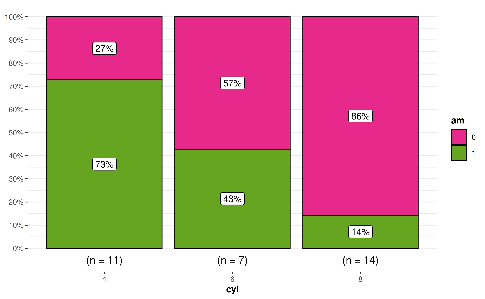
How can I remove a particular geom layer from the
plot?
Sometimes you may not want a particular geom layer to be
displayed. You can remove it by setting transparency
(alpha) for that layer to 0 via the corresponding
*.args argument. For example, to remove the points from a
ggwithinstats() plot:
ggwithinstats(
data = bugs_long,
x = condition,
y = desire,
subject.id = subject,
point.args = list(alpha = 0),
results.subtitle = FALSE,
pairwise.display = "none"
)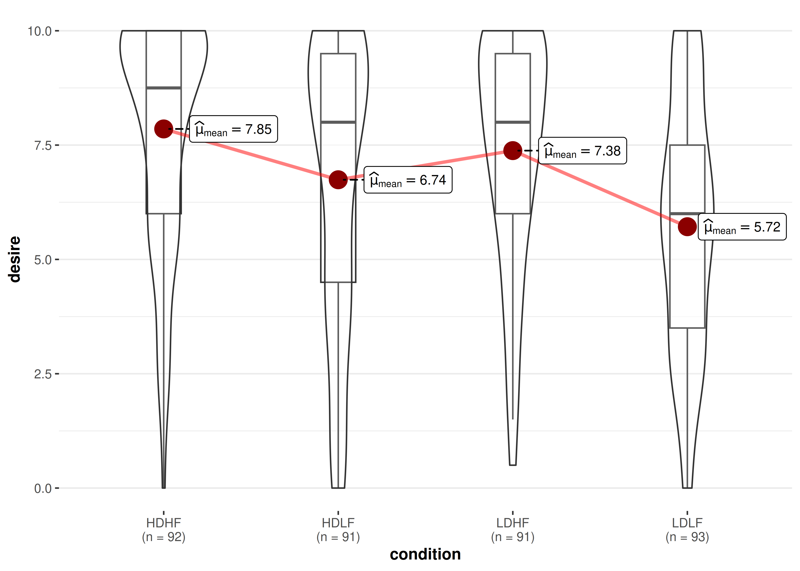
The same works for other layers,
e.g. sample.size.label.args = list(alpha = 0) removes the
sample size labels in ggbarstats().
grouped_ functions and programmatic use
How can I modify grouped_ outputs using
{ggplot2} functions?
All ggstatsplot plots are ggplot objects,
which can be further modified, just like any other ggplot
object. The exception is plots returned by grouped_
functions, which are patchwork objects combining several
plots. To modify each of the individual plots, use the
ggplot.component argument (present in all functions except
ggcoefstats()). For example, this gives all plots the same
color scale and Y-axis range:
library(ggplot2)
grouped_ggbetweenstats(
mtcars,
cyl,
wt,
grouping.var = am,
results.subtitle = FALSE,
pairwise.display = "none",
ggplot.component = list(
scale_color_manual(values = paletteer::paletteer_c("viridis::viridis", 3)),
scale_y_continuous(limits = c(1, 6))
),
# arguments given to `{patchwork}` for annotating the combined plot
annotation.args = list(
title = "Weight by number of cylinders",
theme = theme(plot.title = element_text(size = 20))
)
)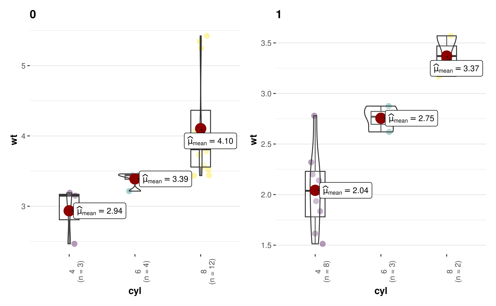
Alternatively, patchwork’s & operator
applies a ggplot2 component to all plots in a
grouped_ output:
grouped_ggbetweenstats(mtcars, cyl, wt, grouping.var = am) &
theme(axis.text.x = element_text(angle = 90))How can I go beyond what grouped_ functions
support?
The grouped_ functions only repeat the analysis across a
single grouping variable, and they don’t let you create
group-specific titles or subtitles. For anything else, split the data
yourself, create one plot per group with purrr, and
combine them with combine_plots() (see also this
article). For example, to repeat the analysis across two grouping
variables with a title for each group:
ggplot2::mpg |>
dplyr::filter(drv %in% c("4", "f"), fl %in% c("p", "r")) |>
(\(d) split(d, f = list(d$drv, d$fl), drop = TRUE))() |>
purrr::imap(\(data, group) {
ggscatterstats(
data = data,
x = displ,
y = hwy,
title = paste0("Drive and fuel type: ", group),
results.subtitle = FALSE
)
}) |>
combine_plots(plotgrid.args = list(nrow = 2L))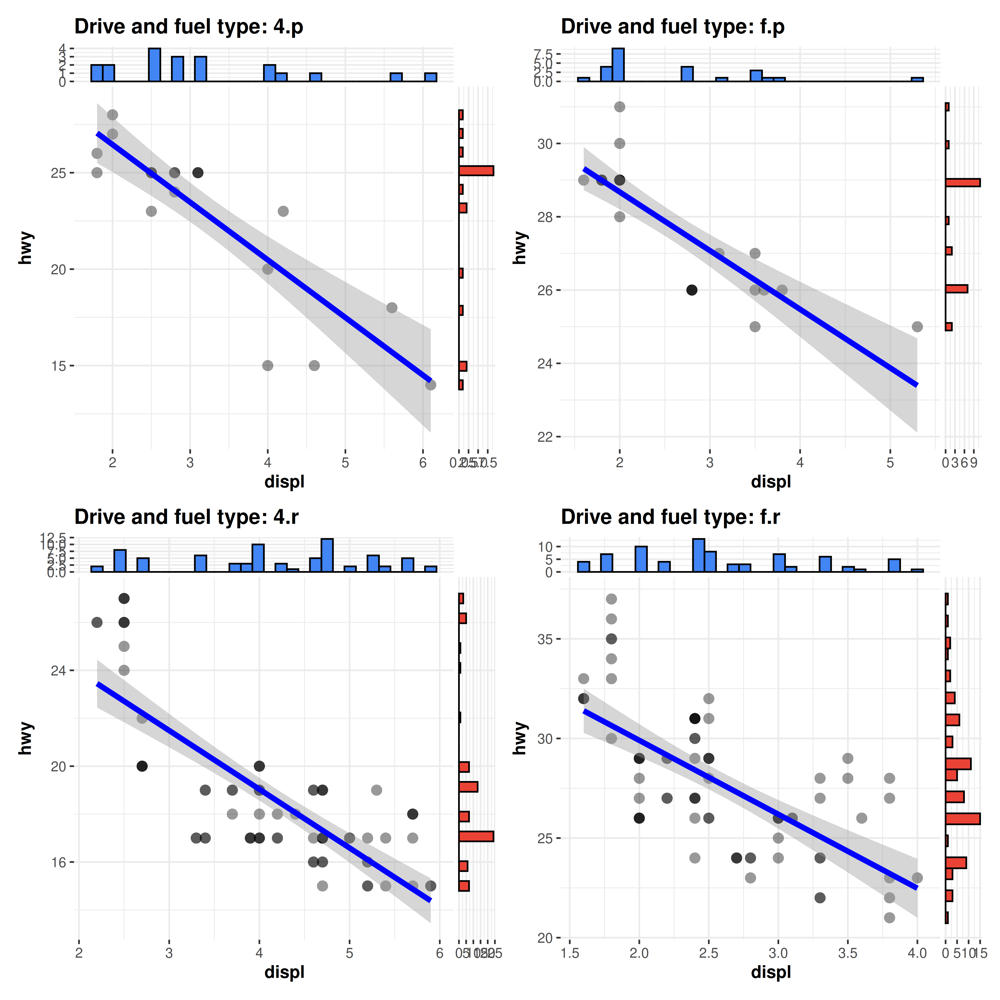
How can I use {ggstatsplot} functions in a
for loop?
Given that all functions in ggstatsplot use tidy
evaluation, running these functions in a for loop requires
minor adjustment to how inputs are entered:
col.name <- colnames(mtcars)
plot_list <- list()
# executing the function in a `for` loop
for (i in 3:length(col.name)) {
plot_list[[col.name[i]]] <- ggbetweenstats(
data = mtcars,
x = cyl,
y = !!col.name[i]
)
}Note that plots created inside a for loop are not
printed automatically; either store them (as above) or wrap the call in
print().
That said, if repeating function execution across multiple columns in
a data frame is what you want to do, I will recommend a {purrr}-based
solution.
This solution would work for x and y
arguments, but not for the grouping.var argument, which
first needs to be converted to a symbol:
Suggestions
If you find any bugs or have any suggestions/remarks, please file an
issue on GitHub: https://github.com/IndrajeetPatil/ggstatsplot/issues